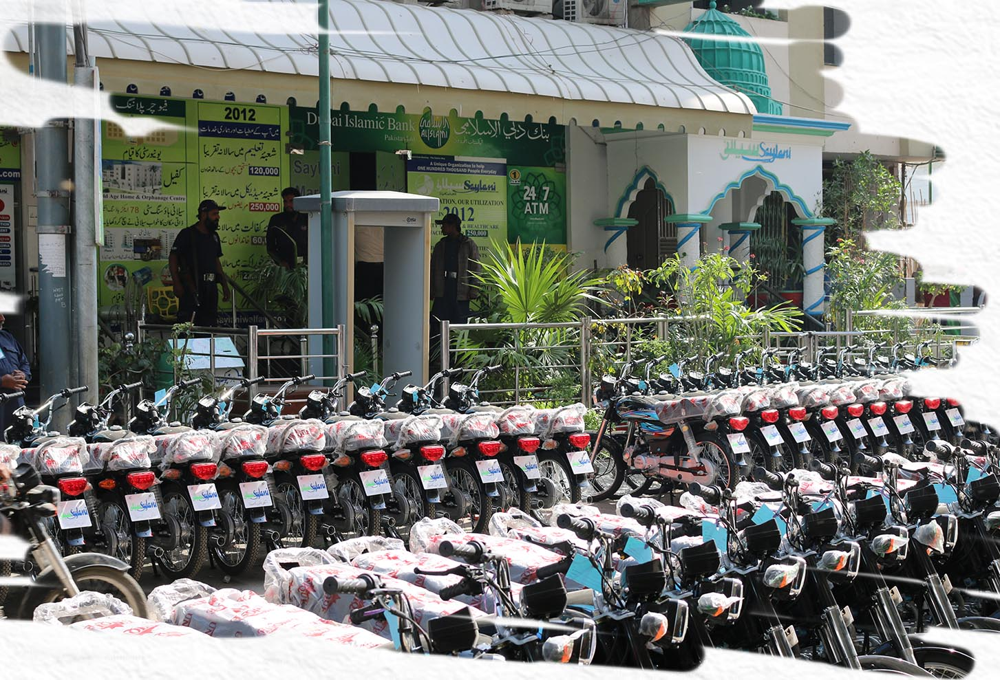

|
|
Home About Service |
IntoductionSaylani Welfare Trust is one of the largest NGO in Pakistan. Saylani's mission is to support the underprivileged by providing essential services such as free food, ration distribution, medical assistance, clean water, and education. Our educational initiatives encompass schools, vocational training programs, and modern IT education. As an affiliate of Saylani Welfare International Trust in Pakistan, which has been dedicated to humanitarian service since 1999, we contribute significantly to the well-being of society, investing over a billion rupees monthly in various philanthropic endeavors. |
 |
Saylani Welfare International Trust has been working for the last 22 years to improve the conditions of the less privileged, helpless, and handicapped individuals. The organization is working day and night to make life happier, especially for the middle class, lower middle class and even lower class. At time of establishing the organization, the founder of Saylani Welfare International Trust and a few of his associates had made a commitment to serve the distressed people living in Pakistan and abroad in all stages of life. It is a blessing in disguise that today the organization is serving humanity in more than 63 areas of life without any discrimination.
Hazrat Allama Maulana Muhammad Bashir Farooq, a distinguished spiritual figure and Islamic scholar, serves as the guiding force, founder, and patron of this organization. Through his dedicated efforts, Saylani Welfare International Trust has become a global humanitarian entity, extending its service to humanity worldwide.
Originating in a rented house, the organization has grown to encompass over 630 branches globally, accompanied by an equal number of Dastarkhwans, employing thousands. Presently, the organization allocates an monthly budget exceeding a billion for humanitarian services. Encompassing more than 63 facets of life from birth to death, including areas such as food, health, education, social welfare, clean water, marriage, mass I.T training, vocational training, aid to Syrian and Burmese refugees, pilgrim services, school fees, easy loans, employment assistance, hairdressing, medical facilities, diagnostic services, x-rays, ultrasounds, ECGs, consultant clinics, mobile dining, mobile clinics, mobile air care clinics, and operation theaters, our organization is dedicated to serving humanity, especially during natural disasters.
Saylani Welfare reaches more than 300,000 individuals daily, offering impactful services. The organization provides vocational training across various disciplines, supports underprivileged families with housing, covers school fees and annual expenses for children, aids in daughters' marriages, facilitates small-scale business through loans, and fosters employment opportunities with rickshaws, motorbikes, stalls, shop delivery, finger chips machines, sewing machines, and other essentials.


|
|
|
UAN: 111-729-526 (+0092-213)4130786-90 CELL: 92-311-1729526 USA NO +1(716)941 7792 UK NO (+44)115 970 6256 |